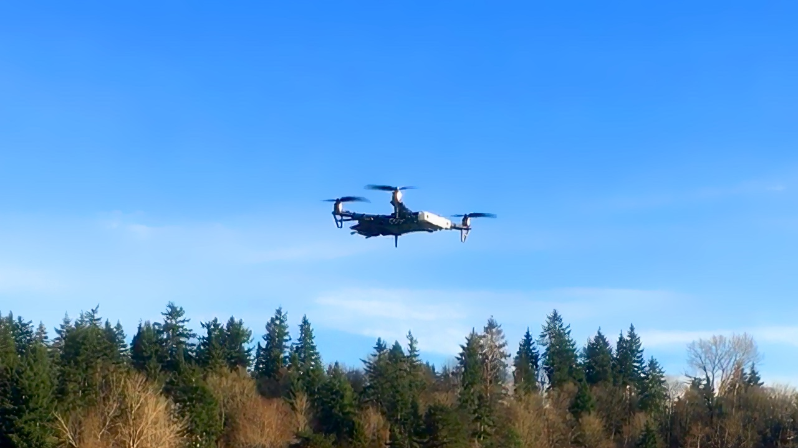
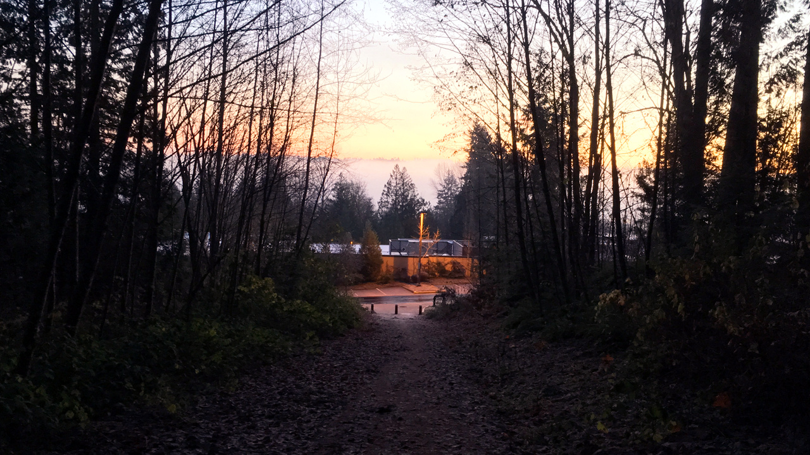

In fall 2017, I conducted a 10-week, full-time internship with NVIDIA in Redmond, Washington.
What I Did, Briefly
I built, tested, and documented-the-creation-process-of a TBS Discovery quadcopter carrying an NVIDIA Jetson TX2, with guidance from NVIDIA’s autonomous mobile robotics team.
The main components of this project were:
- Physical Assembly: Soldering together parts, designing 3d-printable mounts for the Jetson and ZED camera, assembling everything, and making sure that the combined build was flyable (with consideration to weight, balance, power, and RF interference).
- Software Setup: Building and testing the ORB_SLAM2 GPU stereo SLAM library on the drone (and making sure it was able to communicate over MAVROS with the PixFalcon flight controller).
- Documentation: Preparing photos, diagrams, and lots of written material so that others could replicate the build.
The project was completed in the planned 10-week timeframe, and successfully tested in flight.
Work: Less Stressful than School
My subjective experience was that the internship was less stressful than school, despite consuming about the same amount of weekly time. This was a pleasant surprise.
Possible reasons why:
- The number of problems to tackle simultaneously was much smaller. Although I worked on a lot of different problems during the internship, it was usually straightforward to figure out the most critical issue to work on at any given moment. In contrast, school usually involves 3-5 different sources of problems, each generating new problems at noisy, yet correlated, intervals, with no obvious hierarchy of importance.
- Temporal and spatial boundaries around work were much stronger. Work was a place that I could enter and leave, and wasn't allowed to consume more than 8 hours of dedicated time per day. In contrast, schoolwork demands to be done at all hours, in all places, and there aren't any hard limits on how much of it you can need to do in a given week.
- Work was driven by outcomes rather than constraints. Most work problems were some form of outcome driven-problem: "things are like this, but they need to be like that, figure out how to fix it". Many school problems are more constraint-driven; something like "write something that answers this, using one of the techniques we've covered, without referencing sources other than lecture slides or the textbook, by Tuesday".
School problems do have tangible outcomes, and work problems certainly do have constraints, but my experience has been that outcome driven problems were easier to reason about and more satisfying to complete.
Lab Notes: A Progress Accumulator
One of the things I found invaluable while working on my internship was taking rigorous notes while working through problems. I'm used to taking notes while working on schoolwork, but was never very careful about it, and it turns out that this makes an important difference.
A rigorous log of your attempts (and outcomes) acts as a progress accumulator. Real-world problems can take a long time to solve, and it's easy to try a lot of things that don't work, get discouraged, and feel like you've gotten nowhere. Writing down careful experimental results (what exactly did you try, and what exactly was the result?) means that you're still making progress even when your attempts at a solution fail.
Put another way, epsilon incremental progress (gaining a bit of true information from each failed experiment) will accumulate to a solution over finite timesteps, while Bernoulli(epsilon) incremental progress (attempting different methods over and over in the hope that one attempt will be successful) has no such guarantee.
Acronyms I Had to Look Up While Working
In no particular order:
- IMU: Inertial Measurement Unit; a sensor that measures rates of motion and rotation using accelerometers/gyroscopes.
- EKF: Extended Kalman Filter; a filter to produce smooth state estimates from noisy sensor data.
- VIO: Visual-Intertial Odometry; estimation of pose (position + orientation) by combining visual (camera) and IMU sensor data.
- APM/PX4: Two popular auto-pilot firmwares for mobile robots.
- RPY: Roll, Pitch, Yaw; Euler rotation angles in that order.
- ENU/NED: East, North, Up and North, East, Down; two ways of orienting a right-handed coordinate system in physical space.
- PID: Proportional, Integral, Derivative; a type of control system that corrects errors according to the current error value, its integral, and its derivative.
- TX/RX: Transmitter/Receiver (for radio control; the 'X' is meaningless padding).
- PPM/PWM:Pulse Position/Width Modulation; two formats for RC signal transmission.
- M2/M3/M4: Screw designations (2mm, 3mm, and 4mm thread diameter respectively).
- 3S/4S/5S: LiPo Battery designations (3 cell, 4-cell, and 5-cell; the S means the cells are wired in series).
- FCU: Flight control unit.
- ESC: Electronic speed controller.
- PDB: Power Distribution Board.
- JHH: Jen-Hsun Huang, CEO of NVIDIA.
Overall Impressions
I really enjoyed the project, the specific team I was working with, and the overall NVIDIA work environment. I look forward to working more on ML/robotics projects in the future!